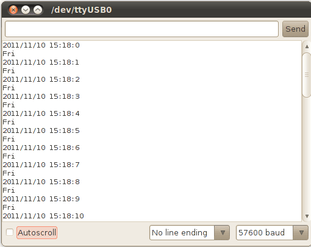
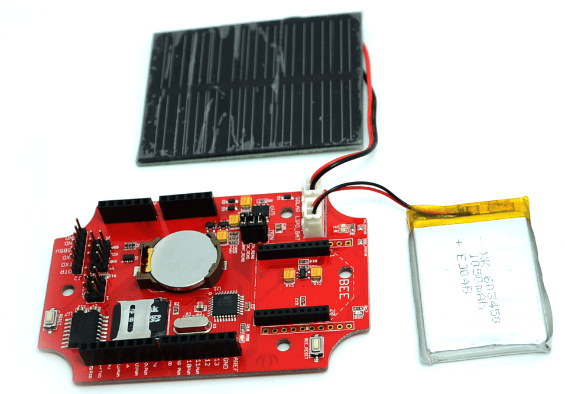
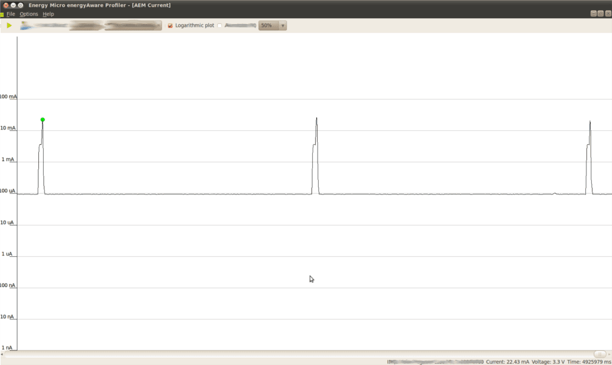

Seeeduino Stalker v2.3
Seeeduino Stalker is a feature rich Arduino compatible Wireless Sensor Network node. Its modular structure and onboard peripherals makes it convenient to log time stamped sensor data on a periodic basis. Seeeduino Stalker comes with a Temperature sensor, RTC with backup power, SD Card Socket, Bee Socket and Solar LiPoimer Ion Battery Charger. The Seeeduino Stalker is a good candidate for all your tracking, monitoring and control projects.
Revision of 2.3 is almost the same as revision of 2.2, the reason we upgrade it is to fix the bug by adding a rectifier diode between LI_BAT and USB5V.
Model: ARD104D2P
Below is previous edition：
And Seeeduino Stalker is a good tool in following areas:
- Wireless Sensor Network (using XBee - bought seperately)
- GPS Logging (using GPSBee - bought seperately)
- Data Acquisition System capable of communicating with an App running on iPhone/Android Phone/Nokia Phone (using BluetoothBee - bought seperately)
- RF Remote Control (using RFBee - bought seperately)
- As a simple standalone Arduino compatible physical computing platform (UartSBee must be bought seperately for programming)
NOTE:
- Please note that UartSBee cannot be inserted into the Bee Series socket present on Seeeduino Stalker. The UartSBee is intended for interfacing the other Bee modules (shown in the photo above) to a computer and cannot itself be inserted into the socket meant for these other Bee modules. There is a separate 5 way pinheader present on UartSBee as well as Seeeduino Stalker for interfacing them to each other. This pinheader is composed of: VCC (to supply power to Stalker), TXD, RXD, DTR (for controlling Stalker's Reset signal) & GND.
- The product is provided as is without an insulating enclosure. Please observe ESD precautions specially in dry (low humidity) weather.
- Please disable bluetooth serial ports when using a Windows based development machine to prevent the Arduino IDE from freezing.
Specifications
- Microcontroller: ATmega328P
- On Board Crystal: 8 MHz
- PCB size: 92.71mm X 60.96mm
- Indicators: Reset, Power, LED on PB5 (Arduino Pin 13)
- Power supply: 3.7-5V
- Power Connector: 2.0mm JST/ USB
- I/O counts: 20
- ADC input: Dedicated 4 channel (ADC0~ADC3, 10 bit resolution)
- Connectivity: I2C, UART, SPI
- RTC Accuracy: ±2ppm from 0°C to +40°C / ±3.5ppm from -40°C to +85°C
- DS3231 Temperature Sensor Accuracy: ±3°C
- Battery JST Input voltage: 3.5-4.2V
- Solar JST Input voltage: 4.6-6V
- Global Current Consumption: See note
- UART Baud Rate (while programming): 115200 bps
Demonstration
Getting Started
The following steps will help you assemble the hardware and software resources to get you started with Seeeduino Stalker
Step 1: Acquiring the Hardware
You will require the following hardware for running your first program.
Seeeduino Stalker v2.e
|
UartsBee v4.0Required for programming the Seeeduino Stalker. Buy Here
|
Mini USB CableYou would probably have this one lying around, or if not, buy one here. We would use this to connect the UartsBee to one of the USB ports on your computer.
|
1 pin dual-female jumper wireRequired for connecting the UartsBee to Seeeduino Stalker.You might already have few lying around your workspace. If not, you can buy a colourful one here.
|
Step 2: Installing the drivers and plugging in the hardware
- UartSBee is like the multi-purpose Swiss Army knife of the Physical Computing world. There is a very detailed procedure to use UartSBee for both Windows and GNU/Linux users here. In our case it will perform three functions:
- Allow us to program the Seeeduino Stalker.
- Allow us to communicate with Seeeduino Stalker.
- Provide power (from USB power of your computer) to Seeeduino Stalker (including any peripherals connected to it).
- The first two functions of UartSBee (programming and communication) are achieved through an Integrated Circuit called FT232RL which is present on it. Before FT232RL can be used for these purposes, its drivers (certain freely available programs from FT232RL's manufacturer) must be installed on your windows/ubuntu based PC. So before proceeding further, download the driver setup file from here and install it on your Windows PC. (OS X Drivers also available and required for OS X)
- UartSBee has an onboard voltage regulator and a switch to allow you to select what voltage (5.0V or 3.3V) you would like to supply to the target circuit board. In our case the target circuit board is Seeeduino Stalker and so you would need to set this slide switch to 5.0 volts
- The wiring connection scheme of our hardware is "Computer→(Mini USB Cable)→UartSBee →(Flat Ribbon Cable)→Seeeduino Stalker". The jumper wires must be connected between UartSBee and Seeeduino Stalker before connecting the UartSBee to the Computer. Refer the photos below and make sure the signals line up as shown in the table (Note: The TXD and RXD pins must be cross connected as shown in the table).
- Next connect the Mini USB cable from UartSBee to your computer. If you are using a Windows based PC, the "Found New Hardware" balloon will popup and within a few moments the drivers for FT232RL (i.e. UartSBee) will be installed.

Jumper Wire connections
| Seeeduino Stalker
|
|
UartSBee
|
| USB5V
|
↔
|
VCC
|
| RXD
|
↔
|
TXD
|
| TXD
|
↔
|
RXD
|
| GND
|
↔
|
GND
|
| DTR
|
↔
|
DTR
|
Connection Notes
- Bee series socket - 2*10 pin 2.0mm pitch (which will mate with - one at a time - any of the wireless modules: XBee, BluetoothBee, GPSBee or RFBee.) Communication with these modules are done through UART.
- Serial interface – To save space and lower costs, USB<->Serial connectivity is not provided by default. You may use the FT232 based UartSBee or other USB to serial adapter boards to do the programming or communicate with the PC.
- User LED – An LED has been provided onboard for use in your application as desired.
- I2C Interface: Onboard I2C level shifter IC provides voltage translation between 3.3V and 5V devices. This allows you to connect I2C device to Stalker when it operating on 3.3 Volts.I2C device operating voltage depends on external voltage(LIPO_BAT and USB5V).
- Grove interface – Add Grove interface which is using D7/D8 .This allows you to connect 3.3V and 5.0V Grove module to Stalker when the it operating on 3.3 Volts.Grove module operating voltage depends on external voltage(LIPO_BAT and USB5V).
Jumpers and Connectors
microSD Card (TransFlash Card) Related
- CS_TF (Jumper type: Solder bridge - 2 way, Location: Bottom, Factory state: SS and PB2 connected by a thin track)
This jumper is a two way jumper made up of three pads: PB1, SS and PB2. SS is the Chip Select signal of the the microSD card. By default SS is connected by a thin track to PB2 - Digital Pin 10 (PB2) of the microcontroller. If instead you want to connect the Chip Select signal from the microSD card to Digital pin 9 (PB1), just cut the track between PB2 and SS and put a solder blob between SS and PB1.
- POWER_TF (Jumper type: Solder bridge, Location: Bottom, Factory state: Disconnected)
By default EN is connected to VCC to always power TF card. If you want to control the TF card power with digital pin 4(PD4) of microcontroller, just put a solder blob between EN and PD4. Conversely, if you want TF card is always available default to be powered, cut the solder you had put.
Bee Module Related
- POWER_BEE (Jumper type: Solder bridge, Location: Bottom, Factory state: Disconnected)
By default EN is connected to VCC to always power xbee. If you want to control the xbee power with digital pin 5(PD5) of microcontroller, just put a solder blob between EN and PD5. Conversely, if you want xbee is always available default to be powered, cut the solder you had put.
Bee Module Related - Only XBee related
- WIRELESS_PROGRAMMING (Jumper type: Solder bridge, Location: Bottom, Factory state: Connected by a thin track)
You can use Digi's XBee modules to wirelessly program the ATmega328P on your Seeeduino Stalker. An XBee module must be configured and installed on your Seeeduino Stalker and another XBee module must be connected to your Laptop via a UartSBee. The pin DIO3 on the Seeeduino Stalker will be used to control the Reset Pin of ATmega328P. This jumper allows you to enable or disable (default: enabled) the control of the Reset Pin of ATmega328P by the DIO3 pin of the XBee module. You can cut the track between the pads of this jumper if you don't want the DIO3 pin to control the Reset pin of ATmega328P. Lady Ada has a nice tutorial on how to remotely program your Arduino based product using XBee. (NOTE: Both the XBee - the one on Stalker and the one connected to the PC must be pre-configured once using the X-CTU software before use.)
- RSSI_STATUS (Jumper type: Solder bridge, Location: Top, Factory state: connected by a thin track)
A red LED present on the top side of the PCB is connected to the RSSI (Received Signal Strength Indicator) pin of the XBee module. XBee outputs a PWM signal on this pin which is directly proportional to the quality of the RF link when the last packet was received by it. This PWM signal when applied to the LED would vary its brightness as per the quality of the RF link - better the link, brighter the LED. Since this LED would consume power, you can cut the track between the pads of this jumper to conserve battery power out in the field. RSSI value is also available over the UART using the DB command (measured in -dBm). (NOTE: The DB value only indicates the received signal strength of the last hop. If a transmission spans multiple hops, the DB value provides no indication of the overall transmission path, or the quality of the worst link – it only indicates the quality of the last link and should be used sparingly.)
User LED Related
- D13_LED (Jumper type: Solder bridge, Location: Bottom, Factory state: connected by a thin track)
A red LED present on the top side of the PCB is connected to the Digital Pin 13 (PB5) of the microcontroller. The LED is free for use by you in your program for any purpose you desire. Since this LED would consume power, you can cut the track between the pads of this jumper to conserve battery power out in the field and use Digital Pin 13 for other purposes like controlling a shield.
Battery Related
- CH_STATUS (Jumper type: Solder bridge, Location: Top, Factory state: connected by a thin track)
Two LEDs present on board Seeeduino Stalker indicate the charging status of the LiPo Battery. The Red SMD LED is connected to the CHRG (or CH) pin of the Lithium Battery charger IC (CN3083 or CN3063) which when glowing, indicates that the charging cycle of the battery is active. The Green SMD LED is connected to the DONE (or OK) pin of the Lithium Battery charger IC (CN3083 or CN3063) which when glowing, indicates that the battery is now fully charged. When operating Seeeduino Stalker out in the field, you can cut the track connecting the CH_STATUS pads to disconnect these LEDs from C_VIN and hence conserve power which would have otherwise been consumed in lighting these LEDs.
Real Time Clock (RTC) Related
- INT (Jumper type: Solder bridge, Location: Bottom, Factory state: Disconnected)
Close this jumper to allow the Real Time Clock (RTC) to wake the ATmega328P at a specified time. This jumper will connect INT of the RTC Chip (DS3231) to PD2 (INT0) of ATmega328P.
- RST/32K (Jumper type: Solder bridge - 2 way, Location: Bottom, Factory state: Disconnected)
If solder bridge is connectet to RST, the RTC will be resetted if PD3 (Digital Pin 3) goes LOW.
The 32K is a 32kHz Output from the RTC on PD3 (Digital Pin 3 / INT1).
Programming
You must set your board type to Arduino Pro or Pro Mini (3.3V, 8MHz) w/ ATmega 328
RTC And Temperature
- Download and install the DS3231 library and sketches available in the resources section. DS3231 library includes modified version DateTime class by Jean-Claude Wippler at JeeLabs
- The demo sketches makes use of the fat16lib Arduino Library for accessing SD Card. Please install FAT16 Library from fat16lib's project page.
Adjust Date/Time
- Set Arduino board as
Arduino Pro or Pro Mini (3.3V, 8MHz) w/ ATmega 328 from Tools-->Board Menu of Arduino IDE.
- Open adjust.pde example from DS3231 library
- Set the current date/time using the DateTime Class object dt in the example:
DateTime dt(year, month, date, hour, min, sec,week-day(starts from 0 and goes to 6));
- Ex:-
DateTime dt(2011, 11, 10, 15, 18, 0, 5);
DateTime dt(__DATE__, __TIME__); // Uses the compile time to set the clock
- compile and upload to Stalker.

Seeeduino Stalker v2.1 adjust.png
Get Current Date/Time
- Set Arduino board as
Arduino Pro or Pro Mini (3.3V, 8MHz) w/ ATmega 328 from Tools-->Board Menu of Arduino IDE.
- Open now.pde example from DS3231 library
- The current date/time is read from DS3231 using
RTC.now() function.
- Ex:-
DateTime now = RTC.now();
- compile and upload to Stalker.

Seeeduino Stalker v2.1 now.png
DS3231 Read Temperature
- Set Arduino board as
Arduino Pro or Pro Mini (3.3V, 8MHz) w/ ATmega 328 from Tools-->Board Menu of Arduino IDE.
- Open temperature.pde example from DS3231 library
- The current temperature in deg C is read from DS3231 using
RTC.getTemperature() function.
- The temperature register of DS3231 is normally updated only once in 64 Seconds.
- Hence, a forced conversion has to be initiated using
RTC.convertTemperature()
RTC.convertTemperature(); //convert current temperature into registers
Serial.print(RTC.getTemperature()); //read registers and display the temperature
Serial.println("deg C");
- compile and upload to Stalker.

Seeeduino Stalker v2.1 temp.png
DS3231 Interrupts
This example is a demonstration of interrupt detection from DS3231 INT output. This feature is useful for data-logger functionality where the MCU is put to sleep mode when not in use and DS3231 INT wakes up the CPU periodically. This extends battery power. The complete operation is documented in the code.
- Solder PD2 and INT pins of INT jumper.
- This connects the DS3231 interrupt out pin to ATmega328 INT0 pin.
- Set Arduino board as
Arduino Pro or Pro Mini (3.3V, 8MHz) w/ ATmega 328 from Tools-->Board Menu of Arduino IDE.
- Open interrupts.pde example from DS3231 library
- compile and upload to Stalker.

Seeeduino Stalker v2.1 interrupts.png
Reading Charging Status
Connected battery and solar pannel to Stalker,the battery could be charged via solar panel and USB5v. The lowest input voltage for charging battery is 4.4v, so if you are using solar panel, you should take it to an open-air place with enough sunshine. Afterwards, uploading the the follwing code to Staler to read the charging status of Stalker.
void setup()
{
Serial.begin(57600);
analogReference(INTERNAL);
//analogRead(6);
}
void loop()
{
char CH_status_print[][4]=
{
"off","on ","ok ","err"
};
unsigned char CHstatus = read_charge_status();//read the charge status
Serial.print("charge status -->");
Serial.println(CH_status_print[CHstatus]);
delay(500);
}
unsigned char read_charge_status(void)
{
unsigned char CH_Status=0;
unsigned int ADC6=analogRead(6);
if(ADC6>900)
{
CH_Status = 0;//sleeping
}
else if(ADC6>550)
{
CH_Status = 1;//charging
}
else if(ADC6>350)
{
CH_Status = 2;//done
}
else
{
CH_Status = 3;//error
}
return CH_Status;
}
Reading Battery Voltage
If you want to know your battery voltage on Analog Pin 7, this is a simple example.
void setup(){
Serial.begin(57600);
analogReference(INTERNAL);
}
void loop() {
float voltage;
int BatteryValue;
BatteryValue = analogRead(A7);
voltage = BatteryValue * (1.1 / 1024)* (10+2)/2; //Voltage devider
Serial.print("Battery Voltage -> ");
Serial.print(voltage);
Serial.print("V ");
Serial.println();
delay(500);
}
Using a Battery Library
There is a library available for battery voltage, percentage and more. You will find the latest library Here.
/*
Battery.cpp (Version 0.3) - Library for Battery infos on Seeeduino Stalker V2.3
Created by Stefan, March 2013.
Notes:
- read lipo battery voltage -> analog pin 7
- current capacity (in %)
- charging status -> analog pin 6
- flashing LED for battery indication
*/
#include <Battery.h>
int LEDPin=13;
int flashesforfull=10; // 1 blink =10%
int chcnt=0;
Battery battery;
void setup(){
Serial.begin(57600);
Serial.println("Battery Library for Seeeduino Stalker V2.3");
}
void loop(){
battery.update();
battery.ledflashStatus(LEDPin,flashesforfull);
float voltage = battery.getVoltage();
int percentage = battery.getPercentage();
char* CS = battery.getChStatus();
bool ch = battery.isCharging();
if(ch) chcnt++;
Serial.print("battery: ");
Serial.print(voltage);
Serial.print("V -> ");
Serial.print(percentage);
Serial.print("% Charge Status: ");
Serial.print(CS);
Serial.print(" charging counter: ");
Serial.println(chcnt);
delay(2000);
}
Data Logger Examples
The principal application of Stalker is data-logging of sensor signal like temperature along with the time-stamp. We have provided 3 sketches along with the DS3231 library demonstrating 3 different implementation. These sketches puts the MCU in sleep mode when not performing data sampling / logging operation. The complete implementation is documented very well in the code. The following section gives an overview :

Seeeduino Stalker v2.1 SolarPanel.png
- StalkerV21_DataLogger_Periodic.pde
- This sketch logs temperature data periodically to SD card configured by
RTC.enableInterrupts(periodicity) function.
- The periodicity is provided using predefined constants EverySecond or EveryMinute or EveryHour
- This sketch produces verbose output i.e the various events happening inside MCU are displayed in serial terminal.
- StalkerV21_DataLogger_5min.pde
- This sketch logs temperature data using to SD card configured by
RTC.enableInterrupts(h, m, s) function.
- The periodicity is provided using h, m and s. Once an interrupt is detected, the next interrupt time is updated by advancing the h,m and s value. The DateTime Class comes handy for this.
- ex:-
interruptTime = DateTime(interruptTime.get() + 300); //decide the time for next interrupt
- This sketch also produces verbose output i.e the various events happening inside MCU are displayed in serial terminal.
- StalkerV21_DataLogger_15Sec_NoSerialPort.pde
- This is similar to previous sketch with different data-log interval. All Serial Port related code is commented to reduce power consumption.
- There is no significant reduction in power consumption by removing Serial Port related code.

Stalker v2.1 datalogger flowchart.png
A note on power consumption
The following screenshot shows the current consumption measurement of Stalker @ 3.3V input connected to LIPO_BAT. In actual application LIPO_BAT is connected to a 3.7V LiPo battery. Hence, consider the following measurement with a pinch of salt!!!
Here in the forum are some discussions about power consumption.
It seems that just the RTC has a Standby Supply Current of 110µA. Here are some infos on Low Power Consuption.
But don't be sad now, even if you get down to an average draw of 1mA, you get 980 mAh/1 mA = 980h = 40.8 Days without charging

Seeeduino Stalker v2.1 datalogger 15S Current Measurement.png
- We see active mode peaks every 15 Seconds. In active mode the MCU samples the temperature and stores it into SD card.
- The current consumption at sleep mode is 95.82 uA @ 3.3V (i.e 316.206 uW power consumption). Please note, that the SD Card VCC is still powered in this demo. To reduce the sleep mode current further, switch off the SD Card using the LDO enable pin by re-configuring the POWER_TF jumper. This might also increase the time taken for SD card to stabilize when VCC is applied.
- The current consumption at active mode peak is 22.43 mA @ 3.3V (i.e 74.019 mW power consumption)
- The current consumption at active mode second-peak is 3.64 mA @ 3.3V (i.e 12.012 mW power consumption)
- The active mode lasts for 400mS or 0.4 Seconds.
Note: If you buy the "microSD Card Reader (in a capsule)", you would not need the "Mini USB cable" since the former also doubles up
Resources
Accessories
Library and Eagle File
Datasheets of Components
- ATmega328P - 8-bit AVR Microcontroller present onboard Seeeduino Stalker.
- DS3231 - Real Time Clock with Digital Temperature sensor on board Seeeduino Stalker v2.1
- CN3063 - Charger controller for Lithium batteries (charging using solar panel)
- Si5904DC - Dual N-Channel 2.5 V (G-S) MOSFETs (used for 3.3V <> 5.0V translation for I2C, refer NXP's AN97055).
- Si2305DS - P-Channel 1.25-W, 1.8-V (G-S) MOSFET.
FAQ
Here is the Seeeduino Stalker FAQ, users can list the Frequently Asked Questions here, example as below:
- Has the user defined switch been removed on version 2.x of Seeeduino Stalker?
- Yes, we have removed the user button on the version 2.x
- In version 1.0 of Seeeduino Stalker the microcontroller could be woken up from sleep mode via interrupt from the Bee module. Is this same feature also available on version 2.0?
- In the previous version (i.e. 1.0), the microcontroller could be woken on RF data packet reception by the Bee module via its pin 15 which was connected to INT0 (PD2) of the microcontroller. In the newer version, the INT0 (PD2) pin of the microcontroller is connected by a jumper (INT_RTC) to the INT pin of the RTC chip which can wake it up at a pre-configured time (or periodically). Since Seeeduino Stalker is meant for use as a wireless sensor network node, this modification would be useful in cases where the microcontroller must wake up periodically to transmit sensor readings and go to sleep again.
- The I2C pin headers on Version 1.0 of Seeeduino Stalker allowed easy connection to external 3.3V as well as 5.0V devices. Is the same feature available on the version 2.x?
- Yes, in fact we have improved it - previously PCA9306 was used for level translation on I2C bus. But now we use N channel MOSFETs for translation - this technique has many advantages (refer NXP's Application Note AN97055.
- There is no English datasheet for the CN3083, what do I do?
- We had used CN3083 on the beta revision of version 2.1 of Seeeduino Stalker (v2.1). The final v2.0 version will have CN3063 on it. The datasheet for CN3083 is only available in the Chinese language. On the other hand, CN3063 has an English language datasheet and is attached above. Both parts: CN3063 as well as CN3083 are very much similar in operation.
- I find the explanation of the battery related jumpers given above a bit confusing, I need a simpler explanation.
- BAT_READ - Allows you to read the battery voltage via Analog Pin 7 of the microcontroller using its builtin Analog to Digital Convertor.
- CH_READ and CH_STATUS Are no longer connectet to Digital Pins (6 & 7) instead to Analog Pin 6, each with a Resistor, so they work like shown in the example obove
- CH_STATUS - The above two signals (CH_READ and OK_READ) also have LEDs connected to them. CH_STATUS jumper allows you to disable these LEDs and decrease power consumption.
Licensing
This documentation is licensed under the Creative Commons Attribution-ShareAlike License 3.0 Source code and libraries are licensed under various open source license, see source code files for details.
Copyright (c) 2008-2016 Seeed Development Limited (
www.seeedstudio.com /
www.seeed.cc)
This static html page was created from http://www.seeedstudio.com/wiki